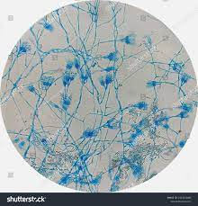
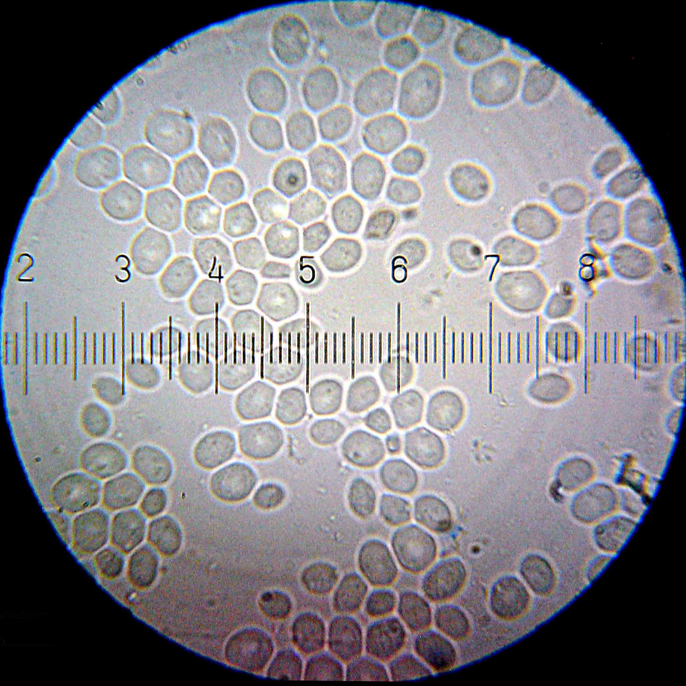
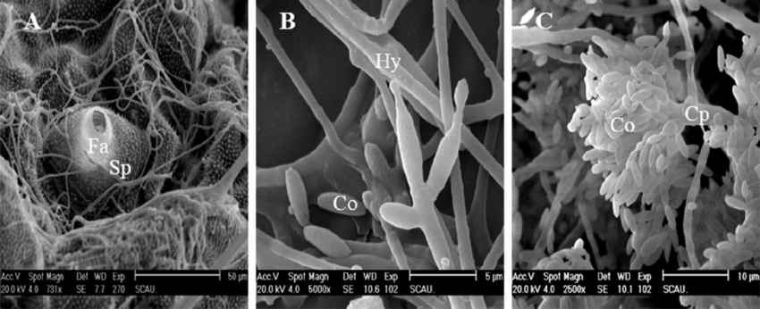

Os fungos são organismos eucarióticos, pertencentes ao reino Fungi. Eles desempenham papéis essenciais nos ecossistemas, atuando como decompositores, simbiontes e até mesmo como parasitas.
Existem milhares de espécies de fungos, variando em tamanho, forma e habitat. Alguns são microscópicos, enquanto outros podem formar estruturas macroscópicas, como cogumelos e líquens.
Além disso, os fungos desempenham um papel importante na indústria alimentícia, na produção de medicamentos (como antibióticos e agentes antifúngicos) e na biotecnologia.
Embora muitos fungos sejam benéficos, alguns podem causar doenças em plantas, animais e seres humanos. É essencial entender a diversidade e o papel dos fungos para aproveitar seus benefícios e mitigar seus efeitos prejudiciais.
Saiba mais sobre o Penicillium:

O fungo Penicillium é de extrema importância em diversos aspectos, sendo eles:
Produção de Antibióticos: A descoberta da peniliina por Alexander Fleming em 1928, derivada do fungo Penicillium notatum, marcou um marco crucial na história da medicina. A penicilina e seus derivados revolucionaram o tratamento de infecções bacterianas, salvando inúmeras vidas desde então. O desenvolvimento de antibióticos baseados em Penicillium contribuiu significativamente para o aumento da expectativa de vida e para o controle de doenças infecciosas em todo o mundo.
Produção de Queijos e Outros Alimentos: Algumas espécies de Penicillium são usadas na produção de queijos, como o Roquefort e o Gorgonzola. Esses fungos desempenham um papel crucial na maturação e no desenvolvimento do sabor desses queijos. Além disso, o Penicillium é usado na fermentação de alimentos, como na produção de salame e em processos de fermentação de alimentos como soja.
Biotecnologia e Pesquisa: O Penicillium é um organismo modelo importante para estudos em microbiologia e biotecnologia. Devido à sua facilidade de cultivo e manipulação em laboratório, é frequentemente usado em pesquisas sobre genética, bioquímica, fisiologia e metabolismo de fungos. Isso inclui estudos sobre a produção de enzimas industriais, biodegradação de compostos orgânicos e bioprocessos para a produção de biocombustíveis e biomateriais.
Reciclagem de Nutrientes: O Penicillium desempenha um papel crucial no ciclo de nutrientes em ecossistemas naturais. Ele está envolvido na decomposição de matéria orgânica, ajudando a liberar nutrientes como nitrogênio e fósforo no solo, tornando-os disponíveis para outros organismos. Isso é fundamental para a fertilidade do solo e para a saúde dos ecossistemas terrestres.
Controle Biológico: Algumas espécies de Penicillium têm potencial para serem usadas como agentes de controle biológico contra patógenos de plantas e insetos, oferecendo uma alternativa sustentável aos pesticidas químicos.
Saiba mais sobre as Leveduras:

O fungo da Levedura tem algumas importâncias em alguns aspectos, sendo eles:
Fermentação e Indústria Alimentícia: As leveduras desempenham um papel crucial na fermentação de alimentos, como pão, cerveja, vinho e queijo. Na produção de pão, as leveduras metabolizam os açúcares presentes na massa, liberando dióxido de carbono, que faz o pão crescer. Na fabricação de cerveja e vinho, as leveduras convertem açúcares em álcool e dióxido de carbono durante o processo de fermentação. Além disso, em queijos como o Roquefort, as leveduras contribuem para o sabor e a textura do produto final.
Produção de Biomassa e Biocombustíveis: Leveduras como a Saccharomyces cerevisiae são frequentemente usadas na produção de biomassa e biocombustíveis. Elas podem ser cultivadas em grandes fermentadores para produzir quantidades significativas de biomassa, que pode ser convertida em biocombustíveis, como etanol, através da fermentação de açúcares.
Biotecnologia e Pesquisa Científica: As leveduras são amplamente utilizadas como organismos modelo em pesquisas científicas, devido à sua genética bem compreendida, ciclo de vida rápido e facilidade de manipulação em laboratório. Espécies como a Saccharomyces cerevisiae são particularmente importantes em estudos sobre genética, biologia celular, biologia molecular e biotecnologia.
Controle de Qualidade e Segurança Alimentar: As leveduras são frequentemente usadas como indicadores de qualidade e segurança alimentar. Por exemplo, em produtos lácteos, a presença de leveduras indesejadas pode indicar condições inadequadas de higiene durante o processamento ou armazenamento. Além disso, algumas leveduras são usadas como probióticos em alimentos fermentados para promover a saúde intestinal.
Biorremediação e Tratamento de Águas Residuais: Certas espécies de leveduras têm a capacidade de degradar compostos orgânicos e poluentes presentes em águas residuais, tornando-as úteis na biorremediação e no tratamento de efluentes industriais. Elas podem metabolizar uma variedade de poluentes, incluindo hidrocarbonetos, compostos aromáticos e produtos químicos tóxicos, ajudando a limpar ambientes contaminados e a reduzir o impacto ambiental de atividades industriais.
Saiba mais sobre o Cordyceps:

O fungo Cordyceps tem algumas características interessantes, sendo elas:
Parasitismo Especializado: Cordyceps é conhecido por seu modo de vida parasitário especializado. Ele infecta insetos e outros artrópodes, tomando controle de seus corpos enquanto cresce. O fungo se desenvolve dentro do hospedeiro, eventualmente emergindo para liberar seus esporos e continuar o ciclo de vida.
Variedade de Espécies: O gênero Cordyceps abrange uma grande diversidade de espécies, cada uma das quais pode ter uma gama específica de hospedeiros. Algumas espécies de Cordyceps infectam formigas, outras infectam lagartas e ainda outras têm hospedeiros diferentes.
Valor Medicinal e Nutricional: Cordyceps é valorizado na medicina tradicional em muitas culturas asiáticas devido às suas alegadas propriedades medicinais. Acredita-se que tenha benefícios para a saúde, incluindo propriedades antioxidantes, imunomoduladoras e anti-inflamatórias. Também é considerado um suplemento alimentar rico em proteínas, vitaminas e minerais.
Habitat Específico: Cordyceps é encontrado em ambientes específicos, muitas vezes em regiões de alta altitude e clima frio, como o Himalaia e outras áreas montanhosas da Ásia. As condições ambientais específicas são essenciais para o crescimento e a reprodução bem-sucedidos desses fungos.
Interesse na Biotecnologia: Devido às suas propriedades medicinais e potenciais aplicações na indústria farmacêutica e de biotecnologia, o Cordyceps tem despertado interesse crescente na pesquisa científica. Estudos estão em andamento para entender melhor seus compostos bioativos e seu potencial terapêutico em uma variedade de condições de saúde.